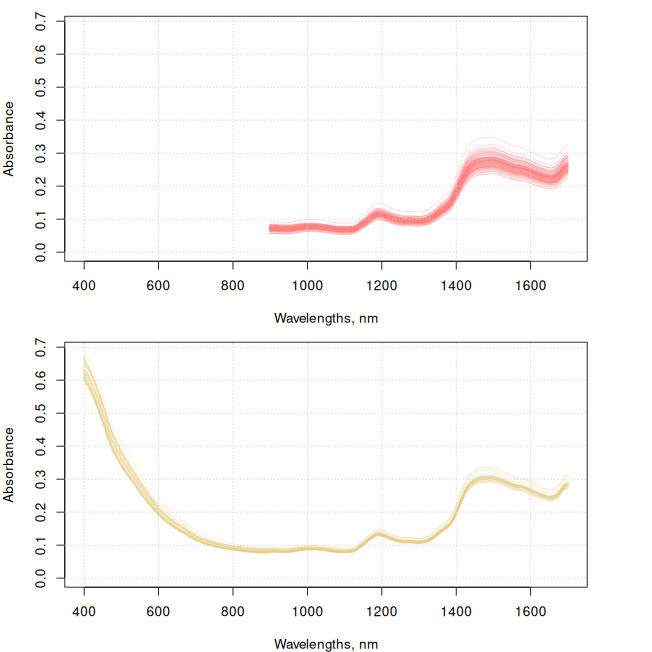
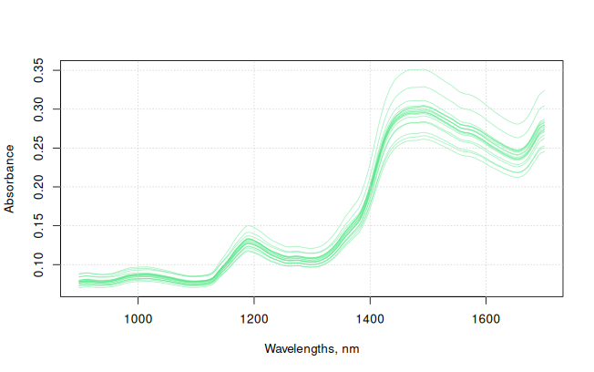
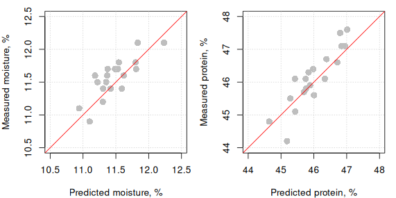

ProxiMate: Building applications
2026-09-05
Source:vignettes/ad-proximate-building-applications.qmd
1 Introduction
A Proximate application comprises the following files:
Calibration data file (.tsv)
Local data file (.tsv)
Project files (.prj)
Calibration model files (.cal)
Application file (.nax)
Report files (.rtf)
Application metadata file (.nad)
A detailed description of the above files and the structure of the application files can be found in the vignette Structure of the application files
2 Build an application
Building an application file requires a series of steps that span from importing the calibration data file(s) to writing down the files containing the data of the predictive models for the response variables. In the following subsections all these steps will be explained.
First of all, the proximetricsR and the prospectr libraries must be installed and loaded.
2.1 Read the calibration data and prepare it
Here we use a two DEMO files containing spectral data of soybean meal samples measured with two different BUCHI ProxiMate devices (up-view mode). These datasets are available at a public repository of BUCHI demo data.
# data location
data_loc <- "https://raw.githubusercontent.com/buchi-labortechnik-ag/demo_data/main/data/"
# location of the tsv file containing the spectral data (of soybean meal)
my_file_1 <- "SoybeanMeal_file1.tsv"
my_file_2 <- "SoybeanMeal_file2.tsv"
my_file_1 <- paste0(data_loc, my_file_1)
my_file_2 <- paste0(data_loc, my_file_2)
# read the files
mdata_1 <- proximate_read_data(my_file_1)
mdata_2 <- proximate_read_data(my_file_2)
# explore the structure of the objects of the imported data sets
str(mdata_1, vec.len = 0, give.attr = FALSE)Classes 'proximate_data' and 'data.frame': 90 obs. of 22 variables:
$ ROW : num NULL ...
$ Check : chr ...
$ Date : chr ...
$ SNR : chr ...
$ ID : chr ...
$ Barcode : chr ...
$ Note : chr ...
$ Result : chr ...
$ Reference : chr ...
$ Protein : num NULL ...
$ Moisture : num NULL ...
$ EtherealE : num NULL ...
$ MineralM : num NULL ...
$ Soluble_protein: num NULL ...
$ Fiber : num NULL ...
$ Urea_activity : num NULL ...
$ Begin : chr ...
$ End : chr ...
$ Recipe : chr ...
$ Composition : chr ...
$ Images : chr ...
$ spc : num [1:90, 1:249] NULL ...
str(mdata_2, vec.len = 0, give.attr = FALSE)Classes 'proximate_data' and 'data.frame': 29 obs. of 21 variables:
$ ROW : num NULL ...
$ Check : chr ...
$ Date : chr ...
$ SNR : chr ...
$ ID : chr ...
$ Barcode : chr ...
$ Note : chr ...
$ Result : chr ...
$ Reference : chr ...
$ EtherealE : num NULL ...
$ Moisture : num NULL ...
$ Protein : num NULL ...
$ Solubility : num NULL ...
$ Fiber : num NULL ...
$ MineralM : num NULL ...
$ Begin : chr ...
$ End : chr ...
$ Recipe : chr ...
$ Composition: chr ...
$ Images : chr ...
$ spc : num [1:29, 1:501] NULL ...The spectral data is stored as a matrix inside the data object. It can be accessed by:
mdata_1$spc
mdata_2$spcThe wavelengths of the spectral data can be obtained from the column names of the spectral matrix as follows:
original_wavs_1 <- as.numeric(colnames(mdata_1$spc))
original_wavs_2 <- as.numeric(colnames(mdata_2$spc))The spectra loaded can be plotted using the plot() function:
old_par <- par(no.readonly = TRUE)
par(mfrow = c(2, 1), mar = c(4, 4, 1, 4))
y_max <- max(c(max(mdata_1$spc), max(mdata_2$spc)))
matplot(
x = original_wavs_1,
y = t(mdata_1$spc),
xlab = "Wavelengths, nm",
ylab = "Absorbance",
xlim = c(400, 1700),
ylim = c(0, y_max),
type = "l",
lty = 1,
col = rgb(1, 0.5, 0.5, 0.3)
)
grid()
matplot(
x = original_wavs_2,
y = t(mdata_2$spc),
xlab = "Wavelengths, nm",
ylab = "Absorbance",
xlim = c(400, 1700),
ylim = c(0, y_max),
type = "l",
lty = 1,
col = rgb(0.9, 0.8, 0.5, 0.3)
)
grid()
2.2 Merge multiple datasets
The two previous vectors (original_wavs_1 and original_wavs_2) are different as the wavelength positions of the two datasets are different which prevents direct merging of their spectral data. To solve this problem, the function proximate_merge() can be used:
mdata <- proximate_merge(list(mdata_1, mdata_2))Warning in proximate_merge(list(mdata_1, mdata_2)): The set of properties seems
different across elementsThe spectra in the resulting mdata object uses the wavelengths of the first dataset in the list of datasets as the reference wavelengths on which the spectral data of the remaining datasets will be resampled to. In this case, the proximate_merge() function resampled both, mdata_2$spc and mdata_3$spc to the wavelengths of mdata_1$spc.
2.3 Resample to constant resolution
One of the constrains to work with the the proximetricsR package is that the spectra must be at a constant resolution. The spectra in this example does not have a constant resolution, however, we can compute the spectral values at a given set of equally spaced wavelengths (within the same spectral range of the original set of wavelengths).
# define the vector of new wavelengths (with constant resolution)
# (replace the psc matrix with the new resampled maxtrix)
# for working with proximetricsR we need to have our spectra in a spc matrix inside
# the data matrix
mdata$spc <- process(mdata$spc, prep_resample(c(900, 1700, 2)), device = "proximate")The final wavelengths are then:
final_wavs <- as.numeric(colnames(mdata$spc))2.4 Activate/deactivate rows for modeling
In case one or more rows need to be deactivated for modeling, the values of the Check column at these row indices need to be set to `"False". Note that the deactivated rows are not removed from the dataset. For instance, if the rows 5, 10 and 50 need to be deactivated as follows:
# a vector with the row indices of the samples to be deactivated
deact <- c(5, 10, 50)
# deactivate
mdata$Check[deact] <- "False"For this example, all the samples/rows in the final dataset will be used for modeling. For that, it is necessary that all the values in the Check column need to be set to "True".
mdata$Check <- "True"2.5 Get the names of the response variables
A trick to get the names of all the response variables in the data
# this gets the names of all the variables in the data
names(mdata)
# this returns the column names of all responses
y_names <- extract_property_names(mdata)
# the indices of all the response variables
ys_indices <- which(colnames(mdata) %in% y_names)
# samples with reference values
colSums(!is.na(mdata[, y_names]))From the 8 properties, the examples that will follow will only take into account 2 of them (the first two): Protein and Moisture.
#get the names of the response variables
y_names <- y_names[1:2]
2.6 Calibrating models using calibrate_models()
The calibrate_models() allows users to automatically build multiple calibration models with the optimization of the pre-processing methods. This function uses internally another function named calibrate() (type ?calibrate in your R console) for calibrating individual models. The arguments of calibrate_models() resemble those of calibrate().
Apart from the input calibration data, the calibrate_models() function has other 5 main arguments:
formulas: specifies the target formulas of the target models that need to be built.metadata_list: it provides the specifications for the metadata of each model in formulas (e.g. the units of the properties).preprocess_recipes: specifies the sequences of preprocessing methods (preprocessing recipes) to be tested.method: indicates the type of regression method to use along with its parameters (e.g. pls or xls).control: indicates how some aspects of the calibration process must be conducted (e.g. cross-validation and outlier detection, etc).
2.6.1 formulas: defining what is to be modeled
Here the predictive functions to be calibrated are defined (e.g. protein as function of spectra) by using the generic way of writing function formulas in R. To do so, the name of the response variable is given first, followed by the tilde operator (~) and then followed by the name of the matrix of spectral predictors. The names of the response variables need to match their names in the respective columns. As the spectral variables are stored under a matrix in the dataset (typically named spc), the user can directly put the name of the matrix instead of writing the names of the wavelengths. For example:
f_simple <- Protein ~ spc
# or
f_long <- as.formula(paste0("Protein ~ ", paste0(final_wavs, collapse = " + ")))In the previous example, both f_simple and f_long are equivalent.
In proximetricsR, the user can also evaluate multiple functions (for different response variables) at once. For that it is necessary to create a list of functions:
app_formulas <- list(Moisture ~ spc, Protein ~ spc)Alternatively, if we already have the property names, we can do the following to easily build the model formulas:
2.6.2 metadata_list: specify the property metadata
Apart from defining the formulas, the user can also indicate some metadata for each model formula (e.g. the units and the decimal places to be shown by the sensor when displaying a predicted value). In this exercise, this is done via:
# Define the metadata of each model (in the same order they are in app_formulas)
models_metadata <- list(
# for the first property
add_model_metadata(decimal_places = 2, unit = "%"),
# for the second property
add_model_metadata(decimal_places = 2, unit = "%")
)Note that the metadata of each model must be specified in the same order of response variables as in app_formulas.
2.6.3 preprocess_recipes: create pre-processing recipes
One of the advantages of using this package is that it uses the concept of pre-processing recipe. A such recipe is basically the instructions on how the different pre-processing steps must be executed and what parameters must be used in each step. The recipe must be built/ordered in the same sequence the pre-processing steps must be applied. The following lines of code provide an example on how a recipe is built:
# here a recipe with the following pre-processing steps is created:
# - spline/resampling: with spectral range between 900 and 1700 in steps of 4
# - StandardNormalVariate
# - First derivative: with a gap parameter of 5 and a smoothing factor of 9
my_precipe_1 <- preprocess_recipe(
prep_resample(c(900, 1700, 4)),
prep_snv(),
prep_derivative(m = 1, w = 5, p = 9, algorithm = "nwp"),
device = "proximate"
)
my_precipe_1$preprocessing_order[1] "resample > snv > derivative (1st)"Similarly, other recipes can be configured:
# here a recipe with the following pre-processing steps is created:
# - spline/resampling: with spectral range between 900 and 1700 in steps of 5
# - StandardNormalVariate
# - First derivative: with a gap parameter of 7 and a smoothing factor of 11
my_precipe_2 <- preprocess_recipe(
prep_resample(c(900, 1700, 4)),
prep_snv(),
prep_derivative(m = 2, w = 7, p = 11, algorithm = "nwp"),
device = "proximate"
)
my_precipe_2$preprocessing_order[1] "resample > snv > derivative (2nd)"
# here a recipe with the following pre-processing steps is created:
# - spline/resampling: with spectral range between 900 and 1700 in steps of 4
# - StandardNormalVariate
# - Second derivative: with a gap parameter of 9 and a smoothing factor of 13
my_precipe_3 <- preprocess_recipe(
prep_resample(c(900, 1700, 4)),
prep_snv(),
prep_derivative(m = 2, w = 9, p = 13, algorithm = "nwp"),
device = "proximate"
)
my_precipe_3$preprocessing_order[1] "resample > snv > derivative (2nd)"
# here a recipe with the following pre-processing steps is created:
# - spline/resampling: with spectral range between 900 and 1700 in steps of 8
# - StandardNormalVariate
# - Second derivative: with a gap parameter of 5 and a smoothing factor of 5
my_precipe_4 <- preprocess_recipe(
prep_resample(c(900, 1700, 5)),
prep_snv(),
prep_derivative(m = 2, w = 5, p = 5, algorithm = "nwp"),
device = "proximate"
)
my_precipe_4$preprocessing_order[1] "resample > snv > derivative (2nd)"When calibrating spectral models, usually different pre-processing recipes are tested. The best recipe is chosen based (at least partially) on the predictive performance. To make the testing procedure simple, proximetricsR allows to test multiple recipes at once. For this, it is necessary to group the recipes into a list, as follows:
my_precipes <- list(my_precipe_1, my_precipe_2, my_precipe_3, my_precipe_4)The my_precipes list will be later use for modeling.
2.6.4 method: how to fit the spectral models
We need to define what regression method is to be used for the calibration of the model(s). This can be done as follows:
# here we use the modified pls regression method (equivalent to the one
# implemented in NIRWise PLUS)
# We use a maximum 11 components
my_pls_method <- fit_plsr(ncomp = 11, type = "nwp")
my_pls_methodFitting method: fit_plsr
ncomp: 11
type : nwp In addition to the fit_plsr(), the fit_xlsr() is also available (see the vignette Mathematical overview of regression algorithms for details on both methods).
# here we use the modified pls regression method (equivalent to the one
# implemented in NIRWise PLUS)
# We use a maximum 11 components
my_xls_method <- fit_xlsr(ncomp = 11)
my_xls_methodFitting method: fit_xlsr
ncomp: 11
type : nwp
min_w: 3
max_w: 15
2.6.5 control: Setting up the calibration parameters
To build calibration models for each response variable we need to define some generic aspects that control the way in which calibrations are build (e.g. how validation is to be conducted, how to handle outliers, etc). To define such overall aspects, the calibration_control() function can be used. The following code exemplifies how to use that function to define the cross-validation type and the outlier detection:
# Control some aspects of how the calibration is built and optimized
# We use k-fold cross-validation with selection of folds based on the order of
# the samples in the data table ("sequential")
# We also specify the number of times a model must be re-fitted after outlier
# removal, e.g. 0 means no re-fiting i.e. no outlier removal; 1 means a model is
# built, then it is used to identify and remove outliers and finally a the final
# model is refitted; a value of 5 would mean that the model is refitted 4 times
# for 4 outlier removal iterations.
my_control <- calibration_control(
validation_type = "kfold",
number = 4,
folds = "sequential",
remove_outliers = 1 # the number of iterations of outlier removal
)Go to the help page of the calibration_control() to obtain more information on all the calibration aspects that can be set with this function.
2.7 Calibrate the spectral models
Once the pre-processing recipes, the calibration parameters and the functions to be fitted, the code for calibrating the different models is rather simple. For example:
optimized_app <- calibrate_models(
formulas = app_formulas,
data = mdata,
preprocess_recipes = my_precipes,
methods = list(my_pls_method, my_xls_method),
control = my_control,
metadata_list = models_metadata,
save_all = TRUE
)
optimized_appThe above object shows you a table with the validation results and the suggested pre-processing methods per model:
Grid search results:
formula recipe min property max property ncomp rsq rmse
1 Protein ~ spc 1 45.1 49.0 4 0.912 0.352
2 * Protein ~ spc 2 45.1 49.0 4 0.912 0.351
3 Protein ~ spc 3 45.1 49.0 4 0.910 0.354
4 Protein ~ spc 4 45.1 49.0 3 0.912 0.351
5 Moisture ~ spc 1 11.0 13.5 2 0.307 0.394
6 * Moisture ~ spc 2 11.0 13.5 5 0.420 0.370
7 Moisture ~ spc 3 11.0 13.5 2 0.307 0.393
8 Moisture ~ spc 4 11.0 13.4 3 0.316 0.377
largest_residual outliers method
1 0.865 1 XLS (nwp)
2 0.833 1 PLS (nwp)
3 0.871 1 PLS (nwp)
4 0.868 1 PLS (nwp)
5 0.929 2 XLS (nwp)
6 1.089 2 PLS (nwp)
7 0.932 2 XLS (nwp)
8 0.948 3 PLS (nwp)
*best model
---
Suggested models:
Model: Protein ~ spc
Spectral preprocessing recipe (device: "proximate"):
- Step 1: prep_resample
min_wav: 900; max_wav: 1700; resolution: 4
- Step 2: prep_snv
- Step 3: prep_derivative
m: 2; w: 7; p: 11; algorithm: 'nwp'
Method: PLS (nwp)
Model: Moisture ~ spc
Spectral preprocessing recipe (device: "proximate"):
- Step 1: prep_resample
min_wav: 900; max_wav: 1700; resolution: 4
- Step 2: prep_snv
- Step 3: prep_derivative
m: 2; w: 7; p: 11; algorithm: 'nwp'
Method: PLS (nwp) The above object prints a summary of the model optimization results. The best models are marked with an asterisk (*). The preprocessing recipes are numbered according to their order in the list passed to the preprocess_recipes argument.
2.7.1 Overview of the best models found
These best models are stored in the resulting object under ...$final_models:
optimized_app$final_models
names(optimized_app$final_models)[1] "Protein ~ spc" "Moisture ~ spc"For the above final models, Protein ~ spc and Moisture ~ spc, the best preprocessing recipes are the ones in my_precipes with indices 2 and 2 respectively. This is, for Protein ~ spc:
Spectral preprocessing recipe (device: "proximate"):
- Step 1: prep_resample
min_wav: 900; max_wav: 1700; resolution: 4
- Step 2: prep_snv
- Step 3: prep_derivative
m: 2; w: 7; p: 11; algorithm: 'nwp'and for Moisture ~ spc:
Spectral preprocessing recipe (device: "proximate"):
- Step 1: prep_resample
min_wav: 900; max_wav: 1700; resolution: 4
- Step 2: prep_snv
- Step 3: prep_derivative
m: 2; w: 7; p: 11; algorithm: 'nwp'These recipes can be accessed by:
optimized_app$final_models$`Protein ~ spc`
# and
optimized_app$final_models$`Moisture ~ spc`A comprehensive set of interactive plots describing each model can be obtained by:
Applying the plot() function on a model produces a HTML file which is immediately loaded and shown in a browser.
The summary table of the optimization can be accessed by:
optimized_app$results_gridThe results_grid table comprises the following fields:
formula: the formulas used to calibrate the spectral models of the properties.recipe: the index of the preprocessing recipe in the list of preprocessings passed to thecalibrate_models()function.ncomp: the optimal number of components found.rsq: the squared correlation coefficient.rmse: the rrot mean squared error.largest_residual: the value of the largest residual found.outliers: the number of outliers detected and removed.selection: a logical indicating the final models found for each property.
The TRUE values in the column selection indicate the final models found. This column can be used to filter the table to show only the description of the final models:
optimized_app$results_grid[optimized_app$results_grid$selection, ] formula recipe min property max property ncomp rsq rmse
2 Protein ~ spc 2 45.1 49.0 4 0.912 0.351
6 Moisture ~ spc 2 11.0 13.5 5 0.420 0.370
largest_residual outliers method selection
2 0.833 1 PLS (nwp) TRUE
6 1.089 2 PLS (nwp) TRUE2.7.2 Checking all the models tested
It is possible to use as final models others than the ones suggested/found by the calibrate_models() function. In that case, these models can be extracted from the list of all models tested, as follows:
optimized_app$all_modelsThe models in optimized_app$all_models are indexed according to the order given in the optimized_app$results_grid table. For example, to manually extract the models 1 (Protein using preprocessing recipe 1) and 6 (Protein with preprocessing recipe 6):
my_other_models <- optimized_app$all_models[c(1, 6)]2.8 Predicting the properties in unseen samples
In this example we will load another (and independent) file containing measurements of soybean meal samples:
my_pred_file <- "SoybeanMeal_file3.tsv"
my_pred_file <- paste0(data_loc, my_pred_file)
pdata <- proximate_read_data(my_pred_file)
original_wavs_pred <- as.numeric(colnames(pdata$spc))
matplot(
x = original_wavs_pred,
y = t(pdata$spc),
xlab = "Wavelengths, nm",
ylab = "Absorbance",
type = "l",
lty = 1,
col = rgb(0.3, 0.9, 0.5, 0.5)
)
grid()
Predicting for the samples in pdata the response values, for which the models in optimized_app were calibrated for, is straightforward. For that, the new data loaded must contain the predictor variable(s). In this case, our predictor is spc which contains all the necessary spectral variables used for calibrating the models. We then can use this data along with the predict function and the object containing the models as follows:
preds <- predict(optimized_app, newdata = pdata)
# matrix of predictions
preds$predictions
# info on the models used
preds$model_informationThe predsobject generated by predict() comprises rlength(names(preds))` components: predictions and model_information. The first one contains a matrix of predictions while the second one contains a list with descriptions of the models that were used.
If the reference values are available in the prediction data (as in the example), we can then compare/validate such predictions. For example:
old_par <- par(no.readonly = TRUE)
par(mfrow = c(1, 2), mar = c(4, 4, 1, 1))
# Moisture plot
plot(
x = preds$predictions[, "Moisture"],
y = pdata$Moisture,
xlab = "Predicted moisture, %",
ylab = "Measured moisture, %",
xlim = c(10.5, 12.5),
ylim = c(10.5, 12.5),
pch = 16,
cex = 1.5,
col = "grey"
)
grid()
abline(0, 1, col = "red")
# Protein plot
plot(
x = preds$predictions[, "Protein"],
y = pdata$Protein,
xlab = "Predicted protein, %",
ylab = "Measured protein, %",
xlim = c(44, 48),
ylim = c(44, 48),
pch = 16,
cex = 1.5,
col = "grey"
)
grid()
abline(0, 1, col = "red")
par(old_par)The squared correlation coefficient and the root mean squared error (rmse) can be computed by:
2.9 Writting down an application file
An application is basically a collection of calibration models with some additional parameters (see the Structure of the application files vignette). This application can be written into a file that can be imported into the ProxiMate sensor to then be used to predict response variables from the spectral measurements made with that sensor. The proximetricsR package also offers a function to write down this application file. For this, the models that the user wants to include in the application need to be placed together into a list object. For example:
my_models <- optimized_app$final_models
# add some important metadata to the application/model list
my_models <- add_application_metadata(
my_models,
view = "Up",
name = "my_application",
description = "created with proximetricsR"
)The order in which the objects are declared in the list will be the same order in which their corresponding response variables will be shown in the ProxiMate sensor.
The application for the calibration models inside my_models can be finally be written as follows:
proximate_write_nax(
path = getwd(),
object = my_models
)3 Other functionality
3.1 Calibrate single models with calibrate
my_p_recipe <- preprocess_recipe(
prep_resample(c(900, 1700, 2)),
prep_snv(),
prep_derivative(m = 1, w = 5, p = 3, algorithm = "nwp"),
device = "proximate"
)
protein_model <- calibrate(
Protein ~ spc,
data = mdata,
preprocess = my_p_recipe, # here we can use only one recipe
method = fit_xlsr(5, type = "nwp"),
control = my_control
)
protein_model
# add the units and the number of decimal places to the model
protein_model <- add_model_metadata(
protein_model,
unit = "%",
decimal_places = 2
)
plot(
protein_model,
spectral = "all",
cv = "all",
validation = "all"
)The fitted model can also be used to make predictions on new data. Just for demonstration purposes, here we will use the mdata data set (the one used for model building) to show how predictions can be obtain from the model applied on spectra:
# add the units and the number of decimal places to the model
my_protein_predictions <- predict(protein_model, newdata = pdata$spc)
my_protein_predictions$model_information
my_protein_predictions$predictions
# create a list with all the models separately calibrated
# (in this case we only have one)
a_model <- list(protein_model)
a_model <- add_application_metadata(
a_model,
view = "Up",
name = "a_protein_application",
description = "created with proximetricsR"
)
proximate_write_nax(
path = getwd(),
object = a_model
)The calibration of a single model can also be useful when there is a model that we might want to replace in the list of models suggested by calibrate_models(). For example:
my_models <- optimized_app$final_models
my_models$`Protein ~ spc` <- protein_model
3.2 Write model-related files (tsv, cal, prj and rtf)
The calibration (.cal), project (.prj) and report (.rtf) files native of the NIRWise PLUS software can be written down using the proximate_write_model() function. To be able to use such files, it is necessary to have local access to the data (.tsv) file containing the calibration data used to fit the models. For example:
# let's write down the calibration data into a tsv file
# define a name for the tsv to be written
tsv_name <- "merged_cal_data.tsv"
# write the tsv
proximate_write_data(
x = mdata,
file = tsv_name,
id = mdata$ID,
spc = "spc",
spc_round = 8,
barcode = "",
properties = y_names,
note = "merged_file_1_and_file_2",
recipe = "SoybeanMeal up-view",
created = mdata$Date,
snr = mdata$SNR
)
proximate_write_model(
object = list(protein_model),
path = getwd(),
tsv_paths = tsv_name,
application_name = "Untitled",
cal = TRUE,
prj = TRUE,
rtf = TRUE
)Note that project files can be opened in NIRWise PLUS. So, if you have access to that software you could try to open the .prj file written with the above code.